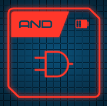
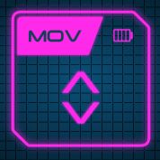
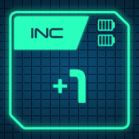
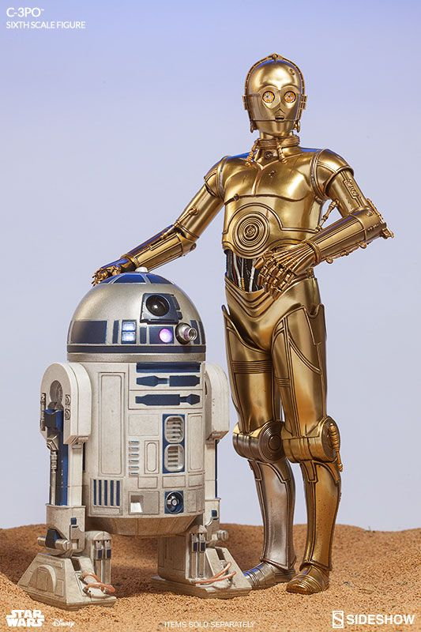
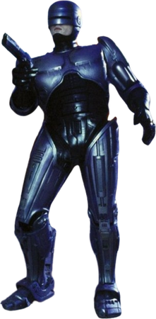
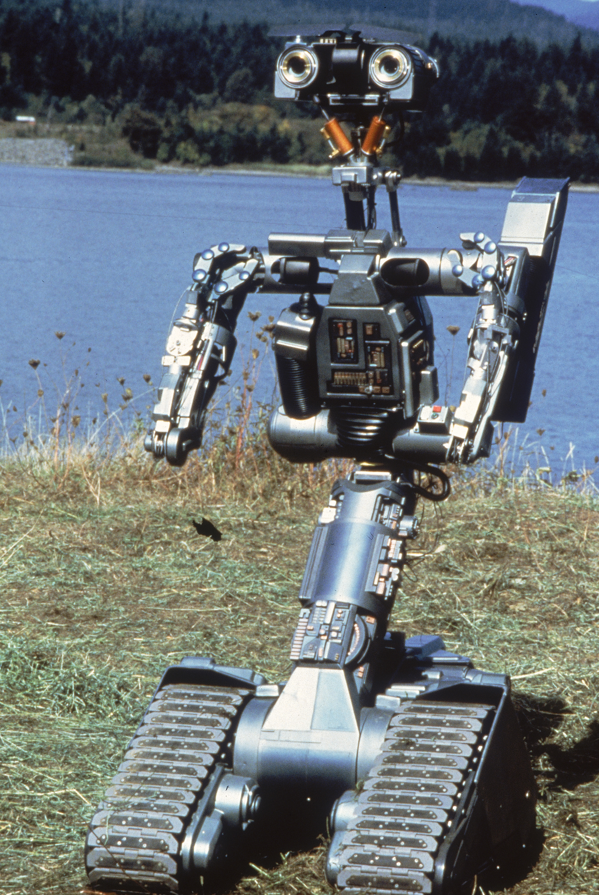

Un ordenador o un robot no es más que un montón de piezas de plástico y metal (Hardware) cobrando vida gracias a las instrucciones (Software). Aquí entenderemos cómo interactúan.
Todo dispositivo informático (tu PC, tu móvil, tu consola) comparte una estructura básica parecida al cuerpo humano:
Aunque parece magia, la CPU (Unidad Central de Procesamiento) en el fondo solo entiende dos cosas: Encendido (1) y Apagado (0). Toda tu música, fotos y videojuegos se reducen a larguísimas cadenas de unos y ceros: el sistema binario.
El corazón de la CPU se llama ALU (Unidad Aritmético Lógica). Es una calculadora rapidísima que hace operaciones matemáticas sencillas con esos ceros y unos: sumas, restas y operaciones lógicas como AND (Y), OR (O) y NOT (NO).
Para entender exactamente cómo la ALU suma números, mueve información a la memoria RAM y hace operaciones lógicas en binario, jugaremos a MOON. En este juego de mesa digital, TÚ eres el procesador principal de la nave espacial y tendrás que arreglar fallos matemáticos operando con bits en los cuatro registros de memoria (A, B, C y D).
Moverás "fichas de energía" (1s y 0s) usando cartas de instrucciones informáticas reales como MOV, AND o INC.



Son los dispositivos que permiten al ordenador comunicarse con el mundo exterior.
Antes de construir robots, debemos pensar en la ética. El famoso escritor de ciencia ficción Isaac Asimov introdujo en 1942 (en su relato corto "Círculo Vicioso" / "Runaround") tres reglas fundamentales que todo robot con inteligencia artificial debería cumplir para proteger a la humanidad:
Nota: Años más tarde, Asimov añadió la Ley Cero: "Un robot no puede causar daño a la humanidad ni, por inacción, permitir que la humanidad sufra daño".
La ciencia ficción ha imaginado múltiples tipos de robots, androides y cíborgs a lo largo de las décadas. Muchos de estos diseños exploran precisamente cómo se aplican o se rompen las leyes de Asimov. ¿Conoces a estos famosos ejemplos?

Droide astromecánico y de protocolo (Star Wars).
Robot compactador de basura con sentimientos (Pixar).
Cíborg asesino programado por Skynet (Terminator).

Mitad hombre, mitad máquina. Todo policía (Robocop).

El robot militar Johnny 5 que adquiere conciencia y vida.
Mientras que un ordenador está pensado para interactuar contigo mediante una pantalla, un robot interactúa con el mundo físico. En clase utilizaremos dos componentes principales:
Es el "cerebro" o microcontrolador. Es un pequeño ordenador de bolsillo que incluye una matriz de 25 luces LED rojas, botones, brújula, acelerómetro y conexión Bluetooth.
Es el "cuerpo" del robot. Tiene dos ruedas motorizadas, sensores para seguir líneas en el suelo y unos "ojos" (sensor ultrasónico) para detectar obstáculos y no chocarse.
El Cutebot usa un sistema llamado conducción diferencial. Como no tiene volante, para girar o moverse depende enteramente de la velocidad que le demos a sus dos ruedas traseras (velocidad de -100 a 100).
Si ambas ruedas giran hacia adelante a la misma velocidad, el coche avanza en línea recta.
Si la rueda izquierda gira más rápido que la derecha (o la derecha se detiene a velocidad 0), el coche gira hacia la derecha.
El Cutebot tiene sensores de luz infrarroja apuntando al suelo que detectan si pisan la línea negra de un circuito o el suelo blanco de la mesa.
La lógica básica de un siguelíneas es usar un Bucle (por siempre) y Condicionales (si... entonces):
La placa Micro:bit tiene un sensor/antena de Radio incorporado. Esto permite que múltiples placas se comuniquen entre sí de forma inalámbrica enviando textos o números, ¡exactamente igual que unos Walkie-Talkies!
Podemos crear una variable llamada "Canal", sumar 1 cada vez que pulsamos A, asignar esa variable al grupo de radio y mostrar el número en los LEDs.
Podemos enviar números o cadenas de texto. Quien recibe, debe usar un evento especial que se "despierta" al atrapar el mensaje en el aire.
La placa Micro:bit tiene un módulo de Radio incorporado. Esto permite que múltiples placas se comuniquen entre sí de forma inalámbrica como si fueran Walkie-Talkies. ¡Podemos hacer un mando a distancia!
Enviamos el texto "AVANZAR" por el aire cuando pulsamos un botón.
Escuchamos la radio y si el mensaje es "AVANZAR", encendemos los motores.
¿Recuerdas a Grace Hopper y su polilla (el primer Bug) del Bloque 2? En robótica, atrapar errores de código es aún más importante, porque si fallas, ¡el coche físico podría descontrolarse y estrellarse contra la pared!
Para evitar accidentes, la web de MakeCode tiene un simulador interactivo en la parte izquierda. Es una Micro:bit virtual donde podemos probar y depurar nuestro código antes de pasarlo a la realidad.
Una vez hayamos depurado el programa en el simulador y estemos 100% seguros de que hace exactamente lo que queremos, ha llegado la hora de la verdad:
.hex que se descarga a la unidad MICROBIT. ¡La placa parpadeará y el código cobrará vida!Es hora de poner a prueba tus conocimientos. Ve a tu panel de alumno y busca el test de este bloque (si tu profesor lo ha activado).
📝 Realizar Test del Bloque